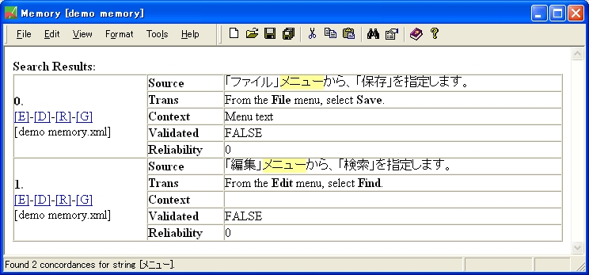

Felix Manual
5.4 The Classic Interface
Section contents:
5.4.1 Getting Started
5.4.2 Look up a Sentence
5.4.3 Navigate through the Matches
5.4.4 Register a Translation
5.4.5 Register a Glossary Entry
5.4.6 Delete a Translation
5.4.7 Get a Translation from Memory
5.4.8 Get a Glossary Entry
5.4.9 Search for Concordance
5.4.10 Save the Memory
5.4.11 Auto Translate the Current Selection
5.4.12 Auto Translate until the Next Fuzzy Match
5.4.13 Look up a Translation in Memory
5.4.14 Correct a Translation
5.4.1 Getting Started
The classic interface is provided to those who prefer the Word interface from TransAssist versions 1.2 and earlier. Functionality is generally identical to those versions. To use the classic interface, you must set it in the preferences. See 5.1 Getting Started, View tab for details.
5.4.2 Look up a Sentence
To have the suite automatically select the next sentence to look up, place
the cursor in front of the sentence, and select Felix >>
Look up Next Setence (or press ALT + →). The Felix interface will
skip any whitespace before the next sentence, and select all the text up to the
next tab, line break, or end-of-sentence marker (e.g. period). The Felix interface will
then send the sentence to Felix for lookup.
Most text formatting information (e.g. bold, italic, font, text color) is preserved in the query. Some formatting information, however, such as highlight color and centered text, is not preserved.
To select the sentence to look up yourself, select a segment of text, then
select Felix >> Look up Current Selection (or press
ALT + L).
If you would like to extend the lookup segment beyond the current selection,
then with the current lookup scope selected, select Felix >>
Extend Lookup Sentence (or press Ctrl + →).
5.4.3 Navigate through the Matches
Sometimes when you look up a sentence in your memory, Felix will have more than one suggestion. The number of suggestions, and the number of the current suggestion, will be shown at the bottom right of the suggestion:

In this example, the first of three suggestions (1/3) is being shown.
To view the next suggestion, click on Next
in the Memory window, or from Word, select
Felix >> Next Translation (or press Alt + N).
To view the previous suggestion, click on
Prev in the Memory window,
or from Word, select Felix >> Previous Translation
(or press Alt + P).
Tip: The score for the previous translation (in this example 68%) is shown next to the Prev link.
Matches will cycle: If you press Next while on the last suggestion, the first suggestion will be shown; likewise, pressing Prev while on the first suggestion will show the last suggestion.
5.4.4 Register a Translation
While a query is shown in the Memory window (see 5.4.2 Look up a
Sentence, above), place the cursor at the end of your translation, and
select Felix >> Register Current
Translation (or press Alt + ↑). The segment from
the start of the original sentence to the current cursor position is registered
as the translation.
To manually select the segment to register as the translation, select a
segment of text, then select Felix >> Register
Current Translation (or press Alt + ↑). The current
selection is registered as the translation.
Tip: Select Felix >> Set And
Next (or press Alt + S) to register the current
translation, then automatically select and look up the next sentence. This is
equivalent to pressing Alt + ↑, then Alt + →.
5.4.5 Register a Glossary Entry
While a query is shown in the Memory window (see 5.4.2 Look up a
Sentence, above), select the glossary entry translation, and
select Felix >> Register As Glossary
Entry (or press Alt + M, G – Note that this will not function if the IME is turned on). A new glossary entry is registered,
with the current query as the source, and the current selection as the
translation.
5.4.6 Delete a Translation
While a suggestion is being shown in the Memory window
(see 5.4.2 Look up a Sentence, above),
select Felix >> Delete Translation
(or press Alt + D), or in the Felix window,
press the Deletelink.
A message box will appear, asking if you really want to delete this translation. To delete the translation, click Yes. The currently displayed entry is deleted. If you change your mind, click No . The entry will not be deleted.
5.4.7 Get a Translation from Memory
While a suggestion is being shown in the Memory window
(see 5.4.2 Look up a Sentence, above),
select Felix >> Get Current Translation
(or press Alt + ↓).
The current selection is replaced by the suggestion.
If you edit the translation and wish to register your new translation, select
Felix >> Register Current Translation
(or press Alt + ↑).
See 5.4.4 Register a Translation for details.
Tip: Select Felix >> Get And
Next (or press Alt + G) to
get the current translation, then register this source/translation
pair and automatically select and look up the next sentence. This is
equivalent to pressing Alt + ↓, Alt + ↑,
then Alt + →.
5.4.8 Get a Glossary Entry
Every time you look up a sentence in the memory, the sentence is also searched for matches in all open glossaries. Any matches are displayed in the corresponding Glossary window. Using the glossary for technical terms helps you keep your translations consistent, saves you typing, and saves time looking up paper or electronic reference materials.

As you are typing, you can retrieve any matches shown in
the Main Glossary window via hot keys. Select
Felix >> Get Glossary Entry >> Entry {N}
(or press ALT + {N}),
where {N} is a number between 0 and 9, to retrieve that glossary entry.
If the number of the entry you wish to retrieve is higher than 9,
then press ALT + M, H
(Note that this will not function if the IME is turned on).
An input box appears; enter the entry number and press Return to retrieve the
corresponding entry.
5.4.9 Search for Concordance
Oftentimes while you translate, you will wonder how you handled a particular
term in previous translations. This is what the Concordance feature is for. Select the term you wish to investigate, then
select Felix >> Find
Concordance (or press Alt + M, C – Note that this will not function if the IME is turned on). Any entries in the memory containing that term in
the Source field appear in the Memory window:

You can also get the concordance for a word in one of your translations.
Select the term you wish to investigate, then select
Felix >> Translation Concordance
(or press Ctrl + Alt + M, C –
Note that this will not function if the IME is turned on).
Any entries in the memory containing that term in the Trans
field appear in the Memory window.
5.4.10 Save the Memory
A prudent backup strategy will save you future headaches
in any computing situation, and Felix is no exception. In order to
facilitate saving the memory and glossaries, you can perform this from Word via
a keyboard shortcut: Just press Alt + M, S to save your
current memory and glossaries (Note that this will not function if the IME is turned on).
You can also do this from the menu, by selecting
Felix >> Save Memory.
5.4.11 Auto Translate the Current Selection
Sometimes, such as when translating a table or a list, you just know that most of the items are going to have 100% matches in your translation memory, and manually going through and checking each entry would be too tedious. If so, then you can use the Auto Translate function to look up every sentence/segment in the current selection, and automatically replace items having a 100% match in the memory with their translations.
To use this function, select the range of text you wish to auto translate, then
select Felix >> Auto Translate Selection
(or press ALT + M, A –
note that this will not function if the IME is turned on).
5.4.12 Auto Translate until the Next Fuzzy Match
You can also auto translate from the current cursor position. Felix will automatically translate each sentence, until it reaches a sentence without a perfect match in the memory.
To use this function, select Felix >> Translate to Fuzzy
(or press ALT + Z).
5.4.13 Look up a Translation in Memory
Oftentimes you will want to review a sentence you have already translated. You can do this by looking up the translation in memory, and seeing its corresponding source sentence.
Position the cursor at the beginning of the translation,
then select Felix >> Find Next Translation (or press
CTL + ALT + →). The translation is selected, and the translation
and corresponding source appear in the Memory window. If you have translated more
than one source sentence with this same sentence, then all corresponding sources are
retrieved, in order of last update (newer entries first).
To select the translation to look up yourself, select a segment of text, then
select Felix >> Find Current Translation (or press
CTL + ALT + M, L – note that this will not function if the IME is turned on).
If you would like to extend the lookup segment beyond the current selection,
then with the current lookup scope selected, select Felix >>
Extend Translation Lookup Sentence (or press Ctrl + ALT + E).
5.4.14 Correct a Translation
To correct a translation after you have registered it in the memory, first make sure that it is the current translation in the Memory window. If it is not, look it up. See 5.4.13 Look up a Translation in Memory for details.
After you have edited the translation, select
Felix >> Correct Translation
(or press Ctrl + ALT + ↑).
- Contents
- 1. Overview
- 2. Getting Started
- 3. Using Felix
- 4. The Menus
- 5. Using from Word
- 5.1 Getting Started
- 5.2 Translation Mode
- 5.3 Review Mode
- 5.4 The Classic Interface
- 5.5 Setting Preferences
- 5.6 Translation History
- 6. Using from Excel
- 7. Using from PowerPoint
- 8. FAQ
- Appendix A. Scripting Felix
- Appendix B. Customizing Felix Templates